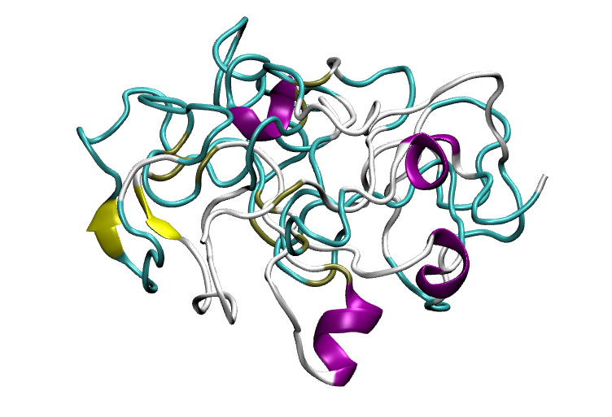

Structural proteins for biomedical materials
The SUPERB (StructUral ProtEins foR Biomedical materials) project is an EU funded project under the Marie Skłodowska-Curie Actions (MSCA) individual fellowship framework. The project is carried out at the Delft Biotechnology Center of DSM, in Delft (The Netherlands), and it will deal with the use of structural proteins for engineer protein polymers for biomedical applications. The engineering community is becoming increasingly interested in these polymers as a source of advanced smart biomaterials, due to their natural abundance, tuneable degradation, easy processability, cytocompatibility, or controllable physicochemical properties. This project will combine computational chemistry, biosynthesis and materials science and engineering to study how polymer features (e.g., chain sequence, length) and processing conditions (e.g., pH, concentration) determine the nanostructure (and hence the macroscopic properties) of the biomaterials derived thereof. Here you can find updates on the scientific progress of the project, as well as on outreach activities. Computational codes and tools developed during the SUPERB project will be accessible from its GitHub web.
Tutorial video
Publications and presentations in conferences
- López Barreiro, D., Folch-Fortuny, A., Muntz, I., Thies, J.C., Sagt, C.M.J., Koenderink, G.H., Computer-aided design of elastin-like polypeptides with controlled viscoelastic and structural properties, chemRxiv, 2022.
- López Barreiro, D., Folch-Fortuny, A., Koenderink, G.H., Thies, J.C., Sagt, C.M.J., Computationally-aided design and synthesis of elastin-like polypeptide (ELP) block copolymers, 18th European Mechanics of Materials Conference, April 2022, Oxford (UK).
- López Barreiro, D., Folch-Fortuny, A., Koenderink, G.H., Thies, J.C., Sagt, C.M.J., Computationally-aided design and synthesis of elastin-like polypeptide (ELP) block copolymers, EMBO workshop: designing functional biomolecular assemblies: beyond biology, 2021.
- López Barreiro, D.*, Minten, I.J., Thies, J.C., Sagt, C.M.J., Structure–Property Relationships of Elastin-like Polypeptides: A Review of Experimental and Computational Studies, ACS Biomater. Sci. Eng, 2021, accepted.
Outreach activities
- 11/04/2022: A tutorial video about the SUPERB project is now available describing the computational-experimental methodology of this research.
- 25/11/2021: We participated in the Science is Wonderful 2021 fair to showcase the research on biobased and bioinspired materials.
- 16/07/2021: The SUPERB project is highlighted as Fellow of the Week in the MSCA social media.
- 18/05/2021: Participation in the Pint of Science NL 2021 edition. You can watch the video here.
- 19/02/2021: Outreach article features in the section Share your science from the Association of Spanish Scientist in the Netherlands (English version).
- 08/02/2021: Outreach talk at the Secondary School IES Santiago Basanta Silva in Vilalba (Galiza, Spain).
- 21/10/2020: Article in Galician published in the on-line science portal GCiencia.
Seminars
- 10/11/2021: Seminar at the Laboratory of Soft Matter Science and Engineering, ESPCI Paris, Paris (France).
- 04/11/2021: On-line seminar at the School of Engineering and Materials Science, Queen Mary University of London, London (UK).
- 02/11/2021: On-line seminar at the Center for Advanced Materials, Heidelberg University, Heidelberg (Germany).
- 17/11/2020: Seminar in the BSc of Advanced Life Science and Technology, Faculty of Science, Leiden University, Leiden (The Netherlands).
Computational methods and tools
Please visit the GitHub repository for scripts, tutorials, and other updates.